基礎題
阿問以手施一大小為 F 的作用力，水平向東推木樁，木樁仍然立著不動，手受到木樁回推一個反作用力。關於其反作用力的作用情形，下列何者正確？
- (A) 木樁同時以大小為 F 的反作用力，水平向西回推阿問的手
- (B) 木樁同時以大小大於 F 的反作用力，水平向西回推阿問的手
- (C) 木樁同時以大小為 F 的反作用力，水平向東回推阿問的手
- (D) 木樁同時以大小大於 F 的反作用力，水平向東回推阿問的手
看答案與詳解
答案：(A)
手推木樁的力：大小 F、向東 → 木樁推手的反作用力：大小 F、向西。
(A) ✔ 大小 F、向西。
(B) ✘ 反作用力不會大於作用力。
(C) ✘ 方向應與作用力相反（向西）。
(D) ✘ 大小、方向都錯。
〔易錯〕木樁不動與反作用力大小無關；木樁不動是因為地面也給木樁力，使木樁所受合力為零。
雅婷和怡君分別對牛頓第一運動定律提出自己的見解，其敘述如下：
雅婷：若靜止的物體不受外力作用，則此物體會一直維持靜止。
怡君：若運動中的物體所受合力為零，則此物體會一直作等速度運動。
關於兩人的敘述下列何者正確？
- (A) 兩人均合理
- (B) 兩人均不合理
- (C) 只有雅婷合理
- (D) 只有怡君合理
看答案與詳解
答案：(A)
雅婷 ✔ 靜止的物體不受外力 → 繼續靜止。
怡君 ✔ 運動中的物體合力為零 → 速度大小、方向都不變，作等速度運動。
兩人均合理 → (A)。
地球與火星的質量比約為 10：1，若兩者間距離為 R 時，地球作用於火星的萬有引力大小為 F1，火星作用於地球的萬有引力大小為 F2，則 F1：F2 為下列何者？
- (A) 1：1
- (B) 10：1
- (C) 1：100
- (D) 100：1
看答案與詳解
答案：(A)
也可由公式看：F＝G×M×m／R2，兩個力用的是同一組 M、m、R，大小相同。
(A) ✔ F1：F2＝1：1。
(B)(D) ✘ 質量比不會讓兩者互相吸引的力不相等。
(C) ✘ 誤用距離平方。
〔易錯〕質量大的星球受力不會比較大；質量只影響「加速度」，火星質量小，被拉動的加速度較大。
一輛小摩托車與迎面而來的高速大卡車正面相撞，摩托車全毀。則下列有關碰撞時力與加速度的大小敘述，何者正確？
- (A) 摩托車所受的力較小，加速度也較小
- (B) 摩托車所受的力較大，加速度也較大
- (C) 二車所受的力大小相同，加速度也大小相同
- (D) 二車所受的力大小相同，但摩托車的加速度較大
看答案與詳解
答案：(D)
由 a＝F／m：受力相同時，質量小的摩托車加速度較大，所以損壞嚴重。
(A)(B) ✘ 兩車受力一樣大。
(C) ✘ 兩車質量不同，加速度不同。
(D) ✔
阿國開著車以時速 100 公里在高速公路上行駛，突然發現前方發生事故，阿國緊急踩煞車停下車子，但是後方車輛因為沒有保持安全距離，煞車不及猛撞上了阿國的車，請問阿國在整個過程中身體的傾斜方向為何？
- (A) 煞車的瞬間前傾；被撞的瞬間後仰
- (B) 煞車的瞬間後仰；被撞的瞬間前傾
- (C) 煞車和被撞的瞬間都前傾
- (D) 煞車和被撞的瞬間都後仰
看答案與詳解
答案：(A)
① 煞車：車子向前減速，加速度向後 → 身體依慣性繼續向前 → 前傾。
② 被後車撞：靜止的車突然被向前推，加速度向前 → 身體依慣性留在原處 → 後仰。
(A) ✔
一艘航行在宇宙間的太空船內有一個質量為 m 公克的物體，如果太空人用 5 牛頓的力量推它，此物體所獲得的加速度為 8 公尺／秒2，則 m 之值為何？
- (A) 0.040
- (B) 40
- (C) 625
- (D) 沒有重力，所以無法算出
看答案與詳解
答案：(C)
(A)(B) ✘ 都不等於 F／a＝0.625 kg（40 是誤用 F×a 的結果）。
(C) ✔ 題目問的是「公克」，0.625 kg＝625 g。
(D) ✘ 質量與重力無關，太空中物體仍有質量，F＝ma 照樣成立。
〔易錯〕F 用 N、a 用 m/s2 時，算出的質量單位是 kg，記得換成公克。
一質量為 2 kg 的物體靜置於無摩擦力的水平桌面上，對此物體施以水平向右的力 F1，其大小為 6 N，使物體作直線運動。F1 施力 3 s 後，對此物體再多施以一個水平向左的力 F2，且兩力作用在同一直線上，已知此物體在 F1 與 F2 同時作用下作等速度運動，則 F2 的大小應為多少？
- (A) 2 N
- (B) 6 N
- (C) 12 N
- (D) 18 N
看答案與詳解
答案：(B)
桌面無摩擦，水平方向只有 F1、F2 → F2＝F1＝6 N。
(A) ✘ 2 N 會使合力 4 N 向右，物體繼續加速。
(B) ✔
(C)(D) ✘ 12 N、18 N 會使合力向左（6 N、12 N），物體先減速，不是等速度運動（18 N 是誤用 F1×t）。
〔易錯〕前 3 s 物體已有向右的速度，加上 F2 後合力為零，物體保持當時的速度，不會停下來。
附表是老師進行教學活動的表格，表中記錄一木塊在水平面上作等加速度運動時，其體積、質量、所受合力大小及摩擦力大小等數據，其數值以便條紙遮住。老師要阿德翻開其中兩張便條紙後，再利用牛頓第二運動定律求出此木塊的加速度大小，他應該翻開哪兩張，就能獲得足夠的數據？
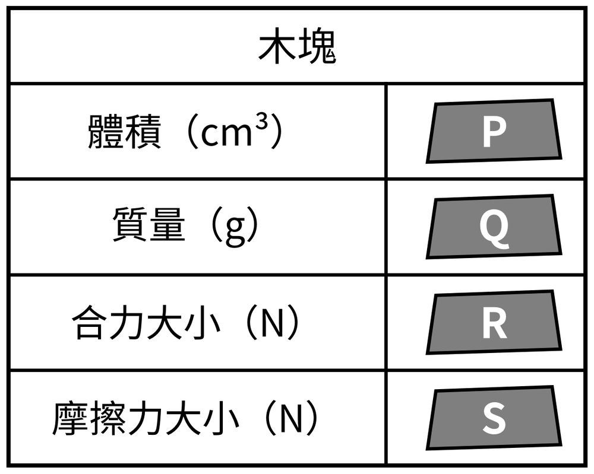
- (A) P、R
- (B) Q、S
- (C) Q、R
- (D) R、S
看答案與詳解
答案：(C)
合力在 R、質量在 Q → 翻開 Q、R。
(A) ✘ 體積不能代替質量（不知道密度）。
(B) ✘ 只知道摩擦力，不知道推力，無法得到合力。
(C) ✔
(D) ✘ 缺少質量。
一個質量為 5 公斤的物體，靜置於光滑水平面上，若先以 30 牛頓的水平力推 10 秒，接著再改以同方向 10 牛頓的水平力推 30 秒，其力與時間的關係如圖所示。請問此物體在第 5 秒及第 25 秒時的加速度大小比為何？
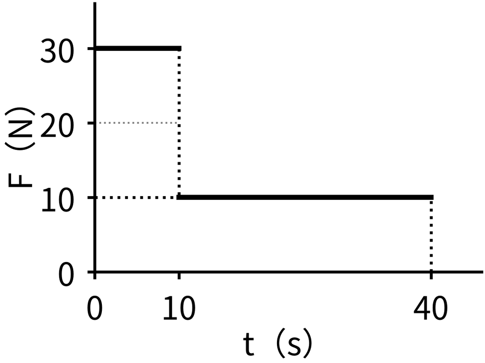
- (A) 1：1
- (B) 3：1
- (C) 3：5
- (D) 4：5
看答案與詳解
答案：(B)
第 5 秒：F＝30 N → a＝30／5＝6 m/s2。
第 25 秒：F＝10 N → a＝10／5＝2 m/s2。
a 比＝6：2＝3：1 → (B)。
〔易錯〕加速度只看「當時」的合力，與之前推了多久無關；第 25 秒的速度雖然比第 5 秒大，加速度卻比較小。
進階題
在無摩擦力的水平桌面上推動木塊，記錄下甲、乙、丙三組實驗中木塊的質量（kg）、推動木塊的水平外力大小（N）、木塊的加速度大小（m/s2）於附表，根據表中數值，推測下列選項中 X、Y、Z 所代表的物理量，哪一個合理？
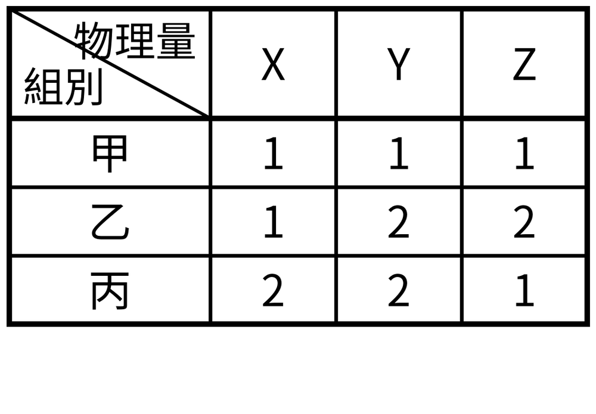
- (A) X：水平外力大小，Y：質量，Z：加速度大小
- (B) X：水平外力大小，Y：加速度大小，Z：質量
- (C) X：質量，Y：加速度大小，Z：水平外力大小
- (D) X：質量，Y：水平外力大小，Z：加速度大小
看答案與詳解
答案：(D)
(A) ✘ 乙：F＝1，m×a＝2×2＝4，不合。
(B) ✘ 乙：F＝1，m×a＝2×2＝4，不合。
(C) ✘ 丙：F＝1，m×a＝2×2＝4，不合。
(D) ✔ 甲 1×1＝1、乙 1×2＝2、丙 m＝2、F＝2 → a＝1，三組都符合。
〔技巧〕代入「最不一樣」的一組（乙或丙）就能快速刪去。
甲、乙、丙、丁四個木塊的質量均為 2 kg，分別置於不同的水平桌面上，並對木塊施以兩個方向相反的水平力，如圖為四個木塊的受力情形及其運動狀態，則此時哪一個木塊所受合力大小為 1 N？
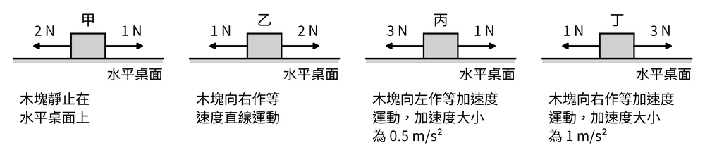
- (A) 甲
- (B) 乙
- (C) 丙
- (D) 丁
看答案與詳解
答案：(C)
(A) ✘ 甲靜止 → 合力 0（桌面給 1 N 的靜摩擦力）。
(B) ✘ 乙作等速度運動 → 合力 0。
(C) ✔ 丙：F合＝m×a＝2×0.5＝1 N。
(D) ✘ 丁：F合＝2×1＝2 N（可見桌面有摩擦力，不是 3−1）。
〔易錯〕甲的兩力相差 1 N，但它靜止，合力仍是 0。
一物體在水平面上向東作直線運動，在時間 t＝15 s 之前，物體所受合力大小為 F1，方向向東；時間 t＝15 s 之後，物體所受合力大小為 F2，方向也向東。若 F1＞F2，則下列何者最可能為其速度（v）與時間（t）的關係圖？
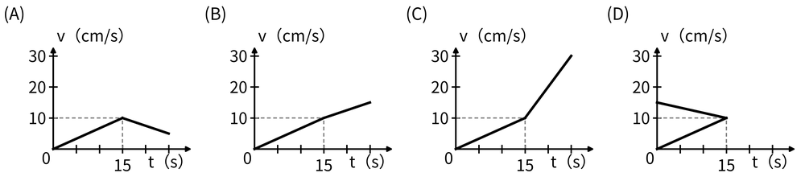
看答案與詳解
答案：(B)
F1＞F2、質量不變 → a1＞a2 → 15 s 之後的斜率較小。
(A) ✘ 15 s 後速度減小，表示合力向西。
(B) ✔ 兩段都加速，後段斜率較小。
(C) ✘ 後段斜率較大，表示 F2＞F1。
(D) ✘ 同一時刻有兩個速度，不可能。
有一台機車在筆直的道路上做直線運動，其速度與時間的關係如圖所示。若定義甲乙丙丁四個時段如下：(甲) 0～1 秒；(乙) 1～2 秒；(丙) 4～5 秒；(丁) 5～6 秒。則在哪些時段機車所受的合力方向與速度方向相反？
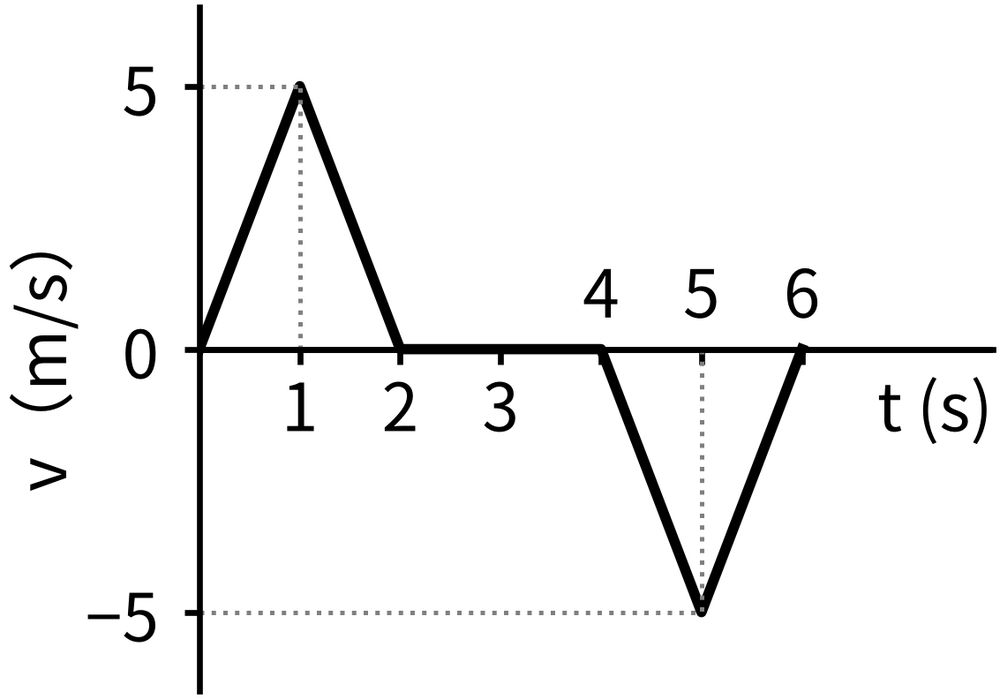
- (A) 乙丁
- (B) 甲丙
- (C) 甲丁
- (D) 乙丙
看答案與詳解
答案：(A)
甲 0～1 s：v 由 0 增為 5 m/s，速率變大 → 合力與速度同向。
乙 1～2 s：v 由 5 減為 0，速率變小 → 反向 ✔
丙 4～5 s：v 由 0 變為 −5 m/s（向反方向愈跑愈快），速率變大 → 同向。
丁 5～6 s：v 由 −5 變為 0，速率變小 → 反向 ✔
答案：乙丁 → (A)。
〔易錯〕丙段斜率為負，但速度也為負，兩者同向，是「加速」不是減速。
阿華坐高鐵南下，若行經某段直線路徑時，發現桌上寶特瓶水面情況及列車行進方向如圖最右側所示。則列車行經該路線的運動關係圖，可能為下列何者？
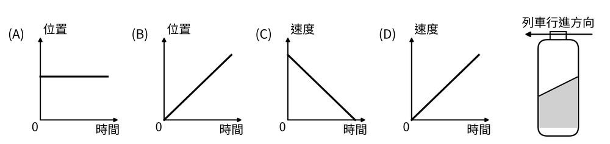
看答案與詳解
答案：(D)
圖中水面在車尾（行進方向的後方）較高 → 水往後堆 → 列車的加速度向前 → 列車正在加速前進。
(A) ✘ 位置不變，列車靜止，水面水平。
(B) ✘ 位置隨時間均勻增加，是等速度運動，水面水平。
(C) ✘ 速度減小，減速時水會往前（車頭）堆。
(D) ✔ 速度隨時間均勻增加，向前加速。
附圖為太陽、地球、月球相對位置示意圖。假設太陽、地球、月球在運行過程中皆位於同一平面上，月球位於圖中何處時，太陽受到地球的萬有引力作用方向及月球受到地球的萬有引力作用方向相同？
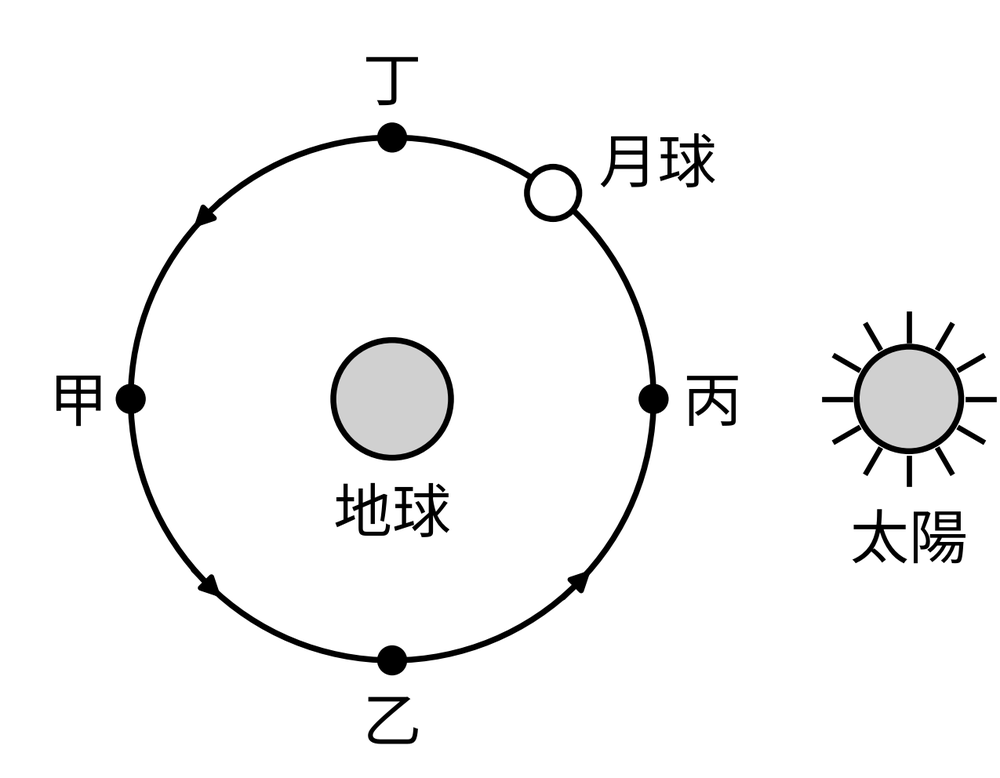
- (A) 甲
- (B) 乙
- (C) 丙
- (D) 丁
看答案與詳解
答案：(C)
太陽受地球的引力：由太陽指向地球（圖中向左）。
月球受地球的引力：由月球指向地球。要與太陽受力同方向（向左），月球必須位於地球的右側，與太陽同一邊 → 丙。
(A) ✘ 甲：月球受力向右。
(B) ✘ 乙：月球受力向上。
(C) ✔
(D) ✘ 丁：月球受力向下。
怡君在夜市玩射飛鏢，她將三支飛鏢射在旋轉圓盤上的甲、乙、丙三位置，飛鏢仍持續隨著圓盤中心旋轉，而旋轉過程的某一瞬間如題圖所示，若選項中箭頭僅代表力的方向，則此時三支飛鏢所受的向心力方向為下列何者？
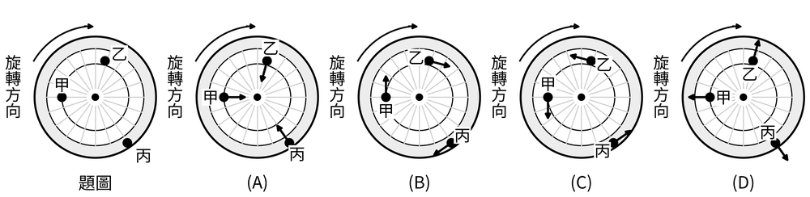
看答案與詳解
答案：(A)
(A) ✔ 三支飛鏢的箭頭都指向圓盤中心。
(B) ✘ 箭頭沿切線（順時針），是速度方向。
(C) ✘ 箭頭沿切線（逆時針）。
(D) ✘ 箭頭指向外，與向心力相反。
新聞報導的部分內容指出：「質量為 370 公噸的太空站，在距離地表約 360 公里的高空軌道繞著地球飛行，民眾可以上網查詢太空站何時會經過台北或台南上空，……」。由萬有引力定律可知，此太空站在高空軌道運行時，其所受的地球引力大小，下列何者最正確？
- (A) 0
- (B) 恰好等於 370 公噸重
- (C) 大於 370 公噸重
- (D) 大於 0 但小於 370 公噸重
看答案與詳解
答案：(D)
萬有引力與距離平方成反比：太空站離地心較遠（約 6400＋360 公里），引力比在地表小，但仍然存在（約為地表的 0.9 倍）。
(A) ✘ 太空站仍受地球引力，這個引力正是使它繞地球運行的向心力。
(B)(C) ✘ 離地心愈遠引力愈小。
(D) ✔
〔易錯〕太空人感覺「無重量」，不代表不受地球引力。
全國黑豹旗棒球比賽時，投手王健岷將球投出以 40 m/s 的水平速度投進本壘，打擊者陳津風將球以 60 m/s 反向水平轟出。已知棒球質量 150 公克且棒球與球棒接觸時間為 0.01 秒。假設球被擊中過程受力固定，則球被擊中時，瞬間球受力大小為多少牛頓（N）？
- (A) 500
- (B) 750
- (C) 1000
- (D) 1500
看答案與詳解
答案：(D)
速度變化 Δv＝60−(−40)＝100 m/s。
a＝Δv／Δt＝100／0.01＝10000 m/s2。
F＝m×a＝0.15 kg×10000＝1500 N → (D)。
(A)(B)(C) ✘ 數值不符；若誤用 Δv＝60−40＝20 m/s，只會得到 300 N。
〔易錯〕球反向飛出，速度變化是兩個速率「相加」；質量要換成 0.15 kg。
會考／素養題
某電影中出現歹徒挾持駕駛，而駕駛試圖擺脫的場景，如圖為其俯視示意圖：下列四種操控汽車的方式，哪一個最可能是圖中提及的操控方式？
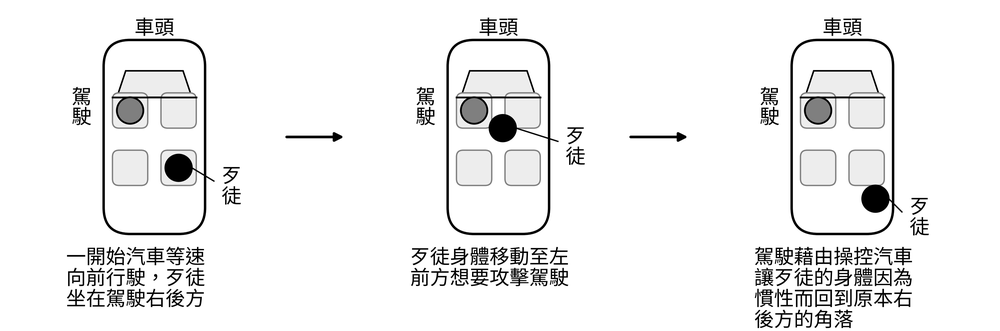
- (A) 先急右轉再急加速
- (B) 先急右轉再急減速
- (C) 先急左轉再急加速
- (D) 先急左轉再急減速
看答案與詳解
答案：(C)
要讓歹徒從左前方回到右後方：先往「右」移、再往「後」移。
① 往右移 → 車的加速度向左 → 急左轉。
② 往後移 → 車的加速度向前 → 急加速。
所以是先急左轉再急加速 → (C)。
(A)(B) ✘ 急右轉會使歹徒往左（更靠近駕駛）。
(D) ✘ 急減速會使歹徒往前衝。
在某科學館中，有一座大型機器，其俯視示意圖如圖所示，當它運轉時可使搭乘者作逆時針的水平等速率圓周運動。小尚手中握球搭乘此機器經過 P 點的瞬間，鬆手使小球由高處自由落下，則此時靜止站在機器旁的爸爸，在小球落下的瞬間，會看到小球在水平方向沿著哪一個方向運動？
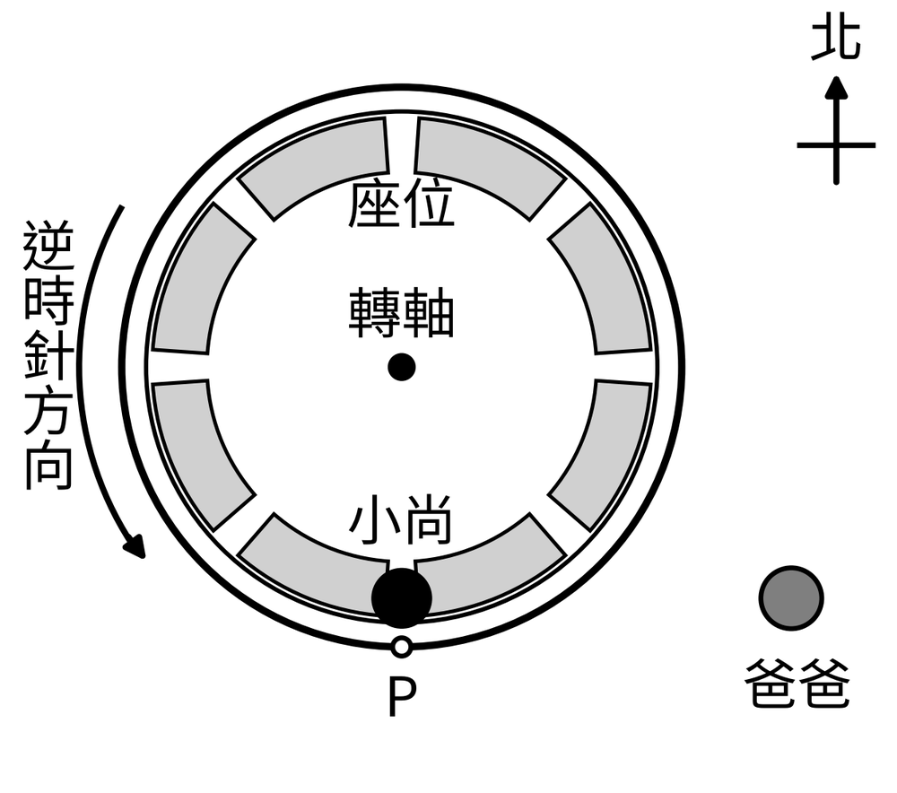
- (A) 東
- (B) 南
- (C) 西
- (D) 北
看答案與詳解
答案：(A)
P 點在圓的最南端；逆時針轉動時，最南端的速度方向向東。
所以爸爸看到小球在水平方向往東運動（同時向下落）→ (A)。
(B) ✘ 南是由轉軸指向 P 的方向，不會沿半徑飛出。
(C) ✘ 順時針轉才會向西。
(D) ✘ 北是向心力的方向，鬆手後小球已不受向心力。
假設在完全無任何風浪的海面上，有一超大型風扇裝置，今放置在一帆船上，對著帆船的風帆吹，如甲圖；再改為放置在岸邊，對著帆船的風帆吹，如乙圖。假設此超大風扇對於風帆，瞬間的推力為 500 公斤重，則甲圖和乙圖中的風帆，瞬間的反作用力各為多少？
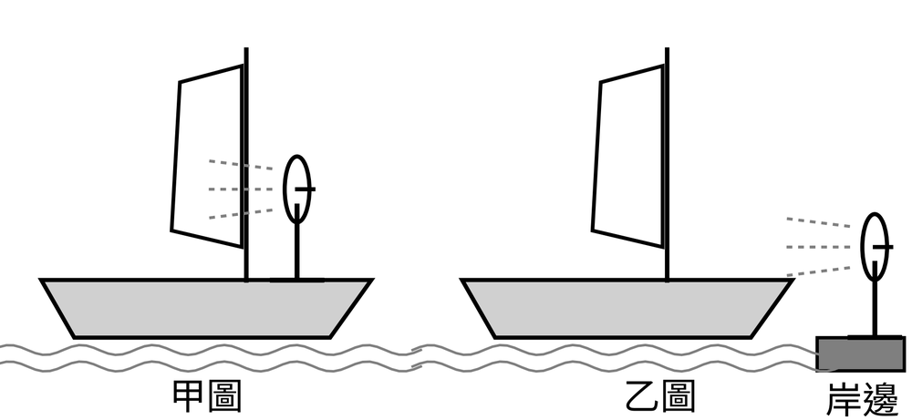
- (A) 甲和乙皆為 500 公斤重
- (B) 甲和乙皆為 0 公斤重
- (C) 甲：0 公斤重，乙：500 公斤重
- (D) 甲：500 公斤重，乙：0 公斤重
看答案與詳解
答案：(A)
風（風扇）推風帆 500 公斤重 → 風帆同時反推風（風扇）500 公斤重，甲、乙兩圖皆然 → (A)。
〔比較〕兩圖的差別在船會不會動：甲圖風扇在船上，推力與反作用力都作用在船上的物體，船幾乎不動；乙圖風扇在岸上，船受 500 公斤重的外力而前進。但反作用力的大小都是 500 公斤重。
如圖，小芳將甲、乙兩個積木垂直堆疊在粗糙水平面上，再以木槌快速敲擊下方的乙積木，使乙積木水平滑行。當乙積木滑行至與甲積木分開的瞬間，關於兩積木加速度的敘述，下列何者正確？
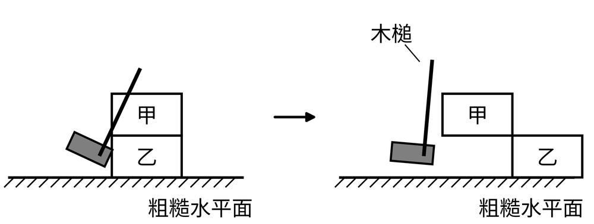
- (A) 兩積木的加速度均不為零
- (B) 兩積木的加速度均為零
- (C) 甲的加速度不為零，乙的加速度為零
- (D) 甲的加速度為零，乙的加速度不為零
看答案與詳解
答案：(A)
甲：下方的乙已離開，失去支撐，只受重力 → 開始向下落，加速度不為零（約 9.8 m/s2 向下）。
乙：在粗糙水平面上滑行，受地面的動摩擦力 → 逐漸減速，加速度不為零（與運動方向相反）。
兩積木的加速度均不為零 → (A)。
〔易錯〕乙被敲擊後的「滑行」不是等速度運動；粗糙面上一定受摩擦力而減速。
俊傑與美玲對於萬有引力定律分別提出以下看法：
俊傑：舉例來說，我桌上的橡皮擦，它以相同大小的力吸引著宇宙中的每一個物體，這種力就是萬有引力。
美玲：舉例來說，我腳底下的地球，它的質量非常大，所以它作用於我的萬有引力會遠大於我作用於它的萬有引力。
關於兩人的看法是否符合萬有引力定律，下列何者正確？
- (A) 兩人的看法均符合
- (B) 兩人的看法均不符合
- (C) 只有俊傑的看法符合
- (D) 只有美玲的看法符合
看答案與詳解
答案：(B)
俊傑 ✘ 橡皮擦吸引其他物體的力，與對方的質量、距離都有關，不會對每個物體都一樣大。
美玲 ✘ 地球吸我、我吸地球是一對作用力與反作用力，大小相等；地球質量大只是讓地球被拉動的加速度極小。
兩人均不符合 → (B)。
如圖（一）所示，以固定水平力拉動木塊甲，使其在無摩擦力的水平桌面上做直線運動，已知使木塊甲前進 8 公尺，需費時 4 秒。若將木塊甲與木塊乙以細線連接，施以相同的水平力，如圖（二）所示，使其前進 8 公尺，則需費時 6 秒。今若使木塊甲從 8 公尺高的高處自由落下，約需 1.3 秒，則將木塊甲與木塊乙以細線連接後，同時自 8 公尺高的高處自由落下，約需費時幾秒？（重力加速度＝9.8 公尺／秒2）
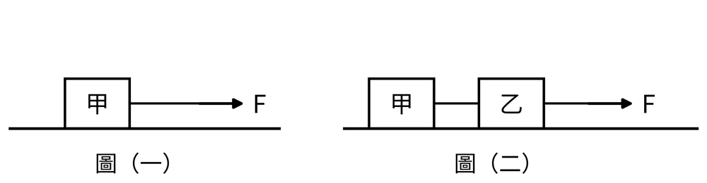
- (A) 1.3
- (B) 3
- (C) 4
- (D) 6
看答案與詳解
答案：(A)
自由落下時，每個物體受的重力都與自己的質量成正比：a＝W／m＝m×g／m＝g，與質量無關。
甲、乙連在一起後仍以 g 落下，落下 8 m 的時間與甲單獨落下相同，約 1.3 s → (A)。
(B)(C)(D) ✘ 誤用水平拉動的比例推算。
〔易錯〕水平拉動時拉力固定；自由落下時「拉力」是重力，會隨質量一起變大。
阿忠與小志想要移動地上的書櫃，發現書櫃裝滿書時，他們無法推動書櫃，因此將裡面的書先拿下，之後就可以輕鬆推動書櫃。兩人對此現象的解釋如下：
阿忠：由牛頓第二運動定律 F＝ma 可知，書櫃裝滿書時，質量 m 較大，因此推動書櫃所需的力 F 也較大，而造成我們推不動書櫃。
小志：書櫃裝滿書時，書櫃垂直作用於地面的力較大，因此書櫃與地面間的最大靜摩擦力較大，而造成我們推不動書櫃。
關於兩人的解釋是否合理？
- (A) 兩人均合理
- (B) 兩人均不合理
- (C) 只有阿忠合理
- (D) 只有小志合理
看答案與詳解
答案：(D)
小志 ✔ 推不動是因為推力未超過最大靜摩擦力；書櫃愈重，壓在地面的力（正向力）愈大，最大靜摩擦力也愈大。
只有小志合理 → (D)。
〔易錯〕「推不動」要用摩擦力解釋，不是用 F＝ma。
一個質量為 m 的物體靜置於水平地面上，施以大小不同的水平推力並測量物體所受的摩擦力大小，實驗裝置如左圖所示，測量結果如右圖所示。當水平推力的大小為 F1 kgw 時，物體的加速度大小為 a1；當水平推力的大小為 F2 kgw 時，物體的加速度大小為 a2，若 a1：a2＝3：5，則 F1 和 F2 的大小最可能分別為下列何者？
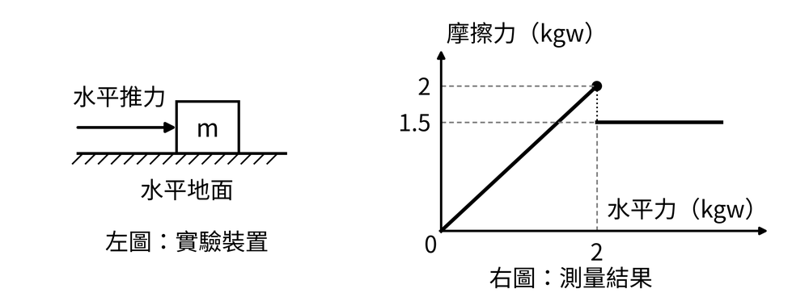
- (A) F1＝3 kgw，F2＝4 kgw
- (B) F1＝4 kgw，F2＝5 kgw
- (C) F1＝5 kgw，F2＝6 kgw
- (D) F1＝6 kgw，F2＝7 kgw
看答案與詳解
答案：(A)
滑動時合力＝F−1.5，質量相同 → a 比＝合力比。
(A) ✔ (3−1.5)：(4−1.5)＝1.5：2.5＝3：5。
(B) ✘ 2.5：3.5＝5：7。
(C) ✘ 3.5：4.5＝7：9。
(D) ✘ 4.5：5.5＝9：11。
〔易錯〕a 比不是推力比；要先扣掉摩擦力求合力。